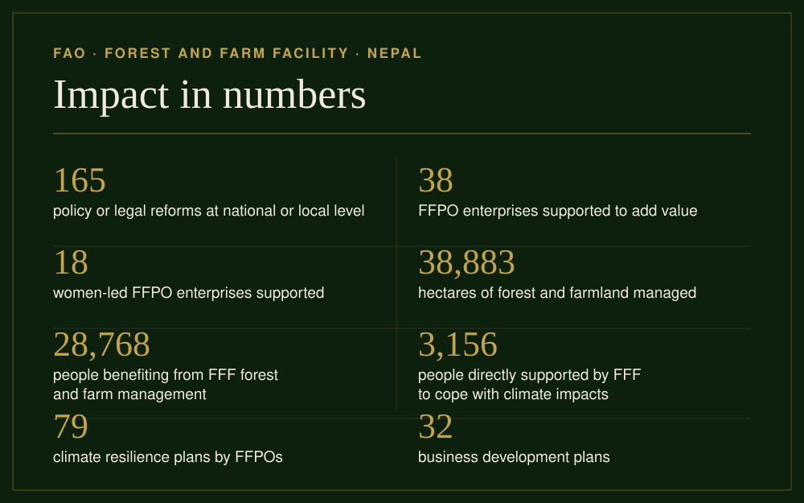

Our change
FFF invests directly in forest and farm producer organizations — financing, business support and peer learning, not top-down projects. Producers decide, producers lead.
Country highlight
FECOFUN advocacy was central to securing provisions in the Forest Act 2019 that recognise agroforestry in community forests and allow CFUGs to establish enterprise provisions such as NTFP processing, timber businesses, and eco-tourism. FECOFUN has facilitated simplifying enterprise registration — the current provision allowing registration at the Division Forest Office. At the same time, FECOFUN advocated for amending provisions on multiple taxation on CFUG commodities, prompting Nepal's Constitutional Court to issue a stay order in 2024 on the Provincial Forest Acts of Bagmati, Lumbini, Karnali, and Sudurpaschim, creating space for policy reform and fairer community forest tax reform policy.
FECOFUN's lobbying led to the dissolution of the Scientific Forest Management procedure in 2021, which was replaced by Sustainable Forest Management. It also created an enabling process for the registration of small forest-based enterprises. FECOFUN advocated for tenure rights of CFUGs and inclusion of gender and equity provisions in local and national forest laws, and collaborated with the Ministry of Forests and Environment to address policy gaps in the Forest Guidelines 2022.
Small grants (USD 10–50k) go straight to organizations. Business plans, financial controls and accountability are built together, then funds are managed by the organization itself.
Organizations are closest to the forest. When they have secure rights, services and markets, restoration and production reinforce each other.
A partnership of FAO, IIED, IUCN and AgriCord with Nepali producer federations, cooperatives and CFUGs. In Nepal: 68 organizations, 73 agreements.

Direct investment in Nepali producer organizations (2019–2026), matched by counterpart contributions from organizations and local governments. Data from Grantees.combined.csv.
How it happens
An international facility that channels finance and services directly to producer organizations — flexible, low-bureaucracy, trust-based.
Stronger organizations → sustainable landscapes → resilient livelihoods. Forests managed by communities store carbon, feed families and create jobs.
Since 2019: 68 organizations, 73 agreements, 5 provinces. From Timur agroforestry in Kavre to dairy in Kathmandu and NTFP in Nawalpur.
Four lines of work
Legal recognition, internal rules and voice of producers.
Quality, processing and market access.
Restoration and climate adaptation.
Business and technical services for members.